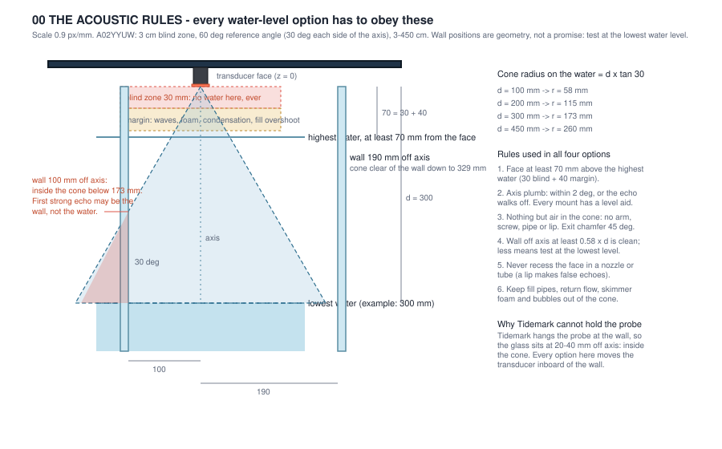
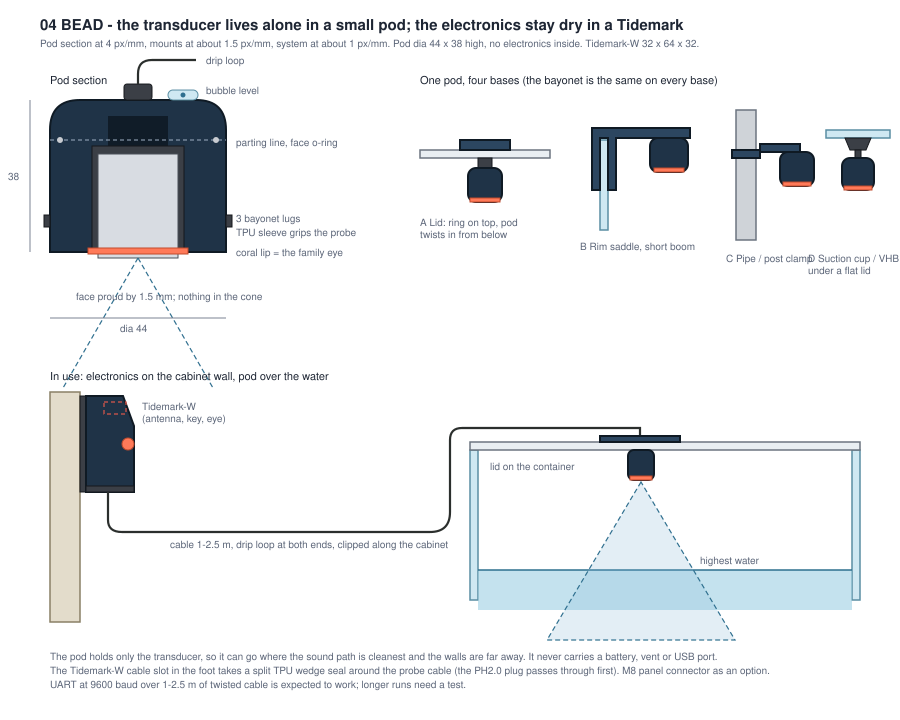
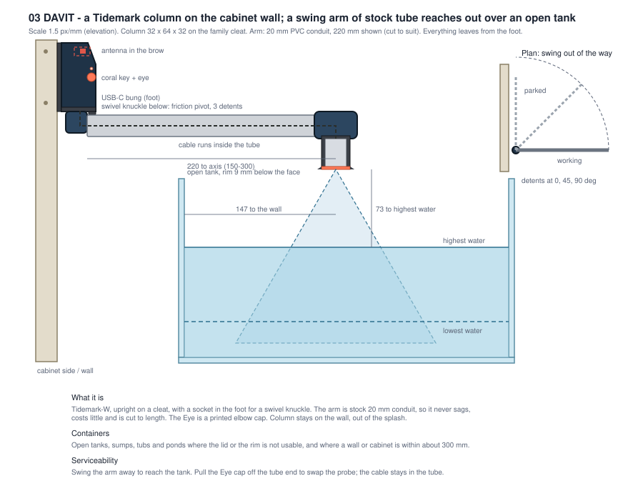
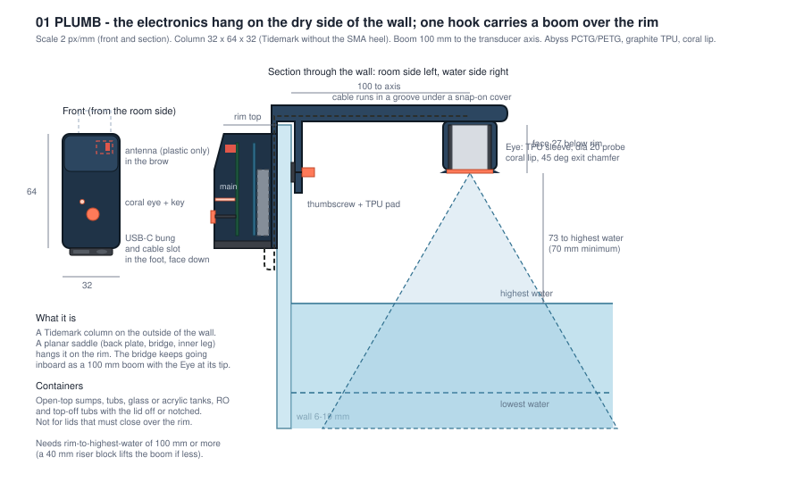
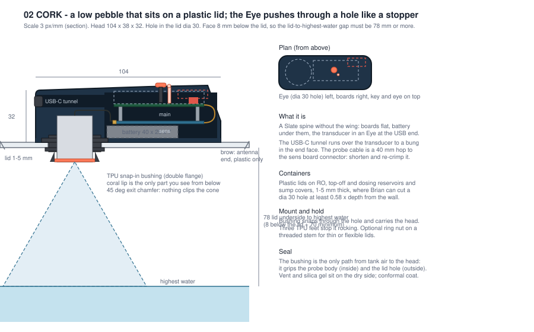
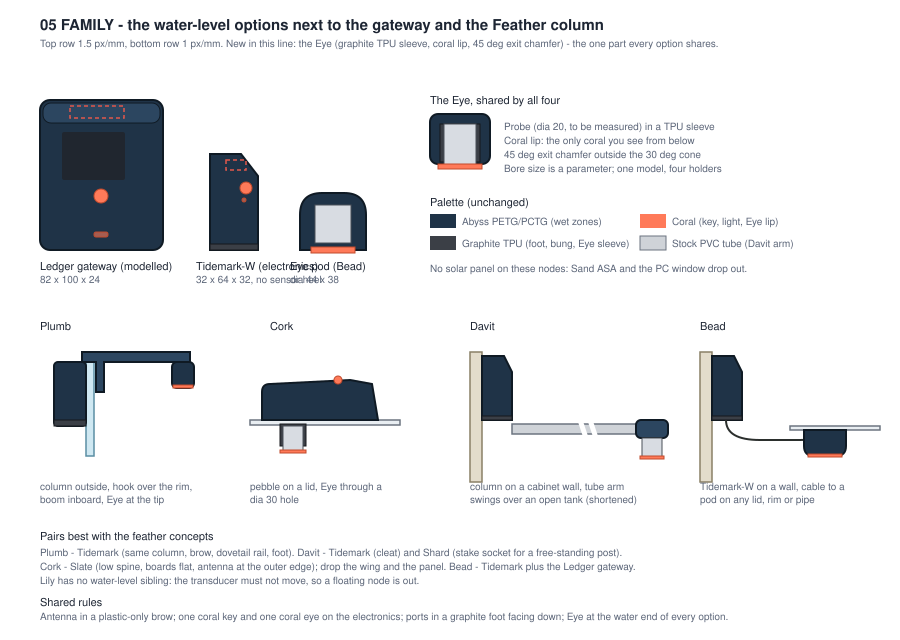

Four ways to house a battery water-level node in a reef room
Concepts only, no CAD. The probe must point straight down, sit at least 70 mm above the highest water (30 mm blind zone plus margin) and see only air in its 60 degree cone. Brian has not fixed the container, so each option suits different containers and mountings. Full text, references, key dimensions and questions are in concepts.md.
The probe's body size, thread and cable length could not be found online. Holders are parametric on Dp (sketches assume 20 mm). Please measure the real part.
Recommendation
| # | Option | Idea | Size (mm) | Looks | Setting | Print/seal | PCB | Total |
|---|---|---|---|---|---|---|---|---|
| 1 | Bead | Transducer in its own pod on a cable; electronics dry in a Tidemark-W; four bases | pod 44 x 38; column 32 x 64 x 32 | 5 | 5 | 4 | 5 | 19 |
| 2 | Davit | Column on a cabinet wall, swing arm of stock tube over an open tank | column + arm 150-300 | 4 | 4 | 4 | 5 | 17 |
| 3 | Plumb | Column on the dry side of the wall, hook over the rim, 100 mm boom | column + boom 100 | 4 | 4 | 3 | 5 | 16 |
| 4 | Cork | Low pebble on a plastic lid, transducer through a TPU bushing | 104 x 38 x 32 | 4 | 3 | 4 | 5 | 16 |
Bead is the system: Tidemark-W plus the Eye pod, with the container choosing the base (lid ring, rim saddle, pipe clamp, suction cup). Davit is its base for an open tank beside a wall. Both share one Eye and one column, so fusion-enclosure models them once.
PCB column: 5 = no change needed. Two electronics issues need Brian: the probe is rated 3.3-5 V (the template rail is 3.0 V) and its standby current may be up to 5 mA, so the probe needs a power switch.
The acoustic rules every option follows

Rules
- Face at least 70 mm above the highest water.
- Axis plumb within about 2 degrees: every mount has a level aid.
- Only air in the cone; Eye exit chamfer 45 degrees; no recess.
Walls
- A wall x mm off axis enters the cone 1.73 x below the face.
- 0.58 x the distance to the lowest water keeps it clear; less needs a test.
- That is why Tidemark cannot hang the probe by the wall.
Bead
Looks 5 · Setting 5 · Print/seal 4 · PCB 5 · 19The pod holds only the transducer, so it can go where the sound path is clean. The column stays dry on the wall with the antenna high. One pod, four bases for lids, rims, pipes and flat glass lids.

Containers
- Any: lidded RO or top-off reservoirs (base A), rim sumps (B), pipes and posts (C), glass or acrylic lids (D).
Key dimensions
- Pod dia 44 x 38, Eye collar dia 30, face proud 1.5 mm, 3 bayonet lugs.
- Column 32 x 64 x 32; foot with USB-C tunnel 12.5 x 7 and cable slot about 12 x 7.5.
Condensation and salt
- Electronics never meet tank air; pod has a face o-ring and a top strain relief; drip loops both ends.
Build (about 9 h, easy to moderate)
- Pod cup lip-down, TPU sleeve, bases flat. Column as Tidemark, roof-down.
- Cable runs over about 2.5 m need a UART test.
Davit
Looks 4 · Setting 4 · Print/seal 4 · PCB 5 · 17A Tidemark-W on a cabinet wall with a swing arm of stock 20 mm conduit. The cable runs inside the tube; the Eye sits on a printed elbow cap. Swing the arm away to reach the tank.

Containers
- Open tanks, sumps, tubs and ponds with a wall or cabinet within about 300 mm.
Key dimensions
- Cleat plate 90 x 50 x 6; knuckle about 30 cubed with a dia 10 pin and 3 detents.
- Tube 20 mm OD, 150-300 mm; elbow cap about 60 x 38 x 38.
Condensation and salt
- Column out of the splash; drip edges at both arm ends; drain notch in the elbow, outside the cone.
Build (about 10 h, moderate)
- The swivel tolerance is the hard part. Tube is a stock part.
- Keep the antenna corner away from metal cabinets.
Plumb
Looks 4 · Setting 4 · Print/seal 3 · PCB 5 · 16The column hangs on the outside face of a rim wall; a planar saddle hooks over the rim and carries a 100 mm boom with the Eye at its tip. One object, one gesture to install.

Containers
- Open-top sumps, tubs and tanks with a free rim of 6-19 mm. Not for lids that must close over the rim.
Key dimensions
- Saddle 18 wide: back plate 3, bridge 9, inner leg 40; boom 100 (60 / 150 variants).
- Face 27 below the rim: needs 100 mm rim-to-water (a 40 mm riser lifts it).
Condensation and salt
- Column on the dry side; boom and Eye over the sump; cable groove ends at a grommet with a drip loop.
Build (about 10 h, moderate)
- Saddle and boom printed on their side in PCTG, no supports.
- Test the torque on an acrylic rim; the hook stands in splash.
Cork
Looks 4 · Setting 3 · Print/seal 4 · PCB 5 · 16A low pebble on a plastic lid. A double-flange TPU bushing snaps through a dia 30 hole and carries the head; the transducer sits in it. A Slate spine without the wing.

Containers
- Plastic lids 1-5 mm on RO, top-off and dosing reservoirs and sump covers; the hole at least 0.58 x depth from the wall.
Key dimensions
- Head 104 x 38 x 32; hole dia 30; flange dia 40; face 8 mm below the lid.
- Lid-to-highest-water at least 78 mm.
Condensation and salt
- The bushing is the only path from tank air; vent and silica on the dry side; drip groove on the bushing.
Build (about 8-9 h, moderate)
- Cartridge drops in from above (no slide-in constraint). Probe cable must be shortened and re-crimped.
- Needs a hole in the lid; fails in a narrow, deep bucket.
Next to the gateway and the Feather column

- Plumb and Davit pair with Tidemark; Cork pairs with Slate; Bead pairs with Tidemark and the Ledger gateway. Lily has no sibling.
- New shared part: the Eye (graphite TPU sleeve, coral lip, 45 degree chamfer). Everything else is the existing language: brow, coral key and eye, graphite foot, Abyss.
Electronics requests and questions
| ID | Request | Why |
|---|---|---|
| W1 | Power the probe from a switched 3.3 V or more, not the 3.0 V VSENS rail | Probe rated 3.3-5 V; standby up to 5 mA is 120 mAh a day if left on |
| W2 | Side-entry PH2.0 4-pin centred on the x = 90 edge, VCC / GND / RX / TX | Cable leaves straight out of the foot |
Questions for Brian: the container (type, depth, width, lid and wall material and thickness, whether the lid must close); the highest and lowest water levels; a wall or post within 300 mm; the probe size and whether its cable can be cut; the battery life target; whether a separate pod is acceptable; TPU and PCTG on hand; which feather concept you lean towards. The full list is in concepts.md section 8.